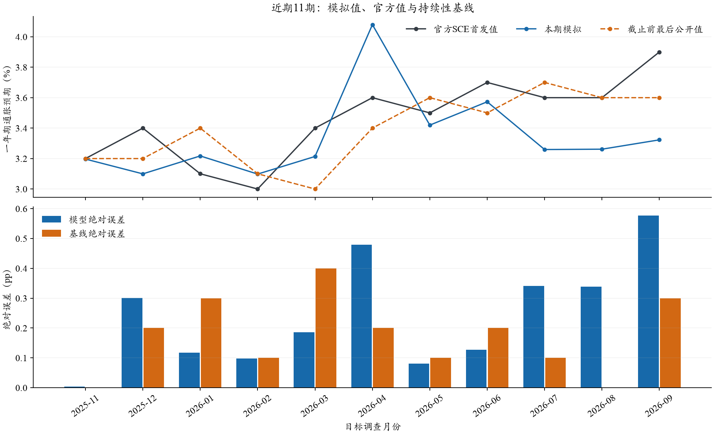
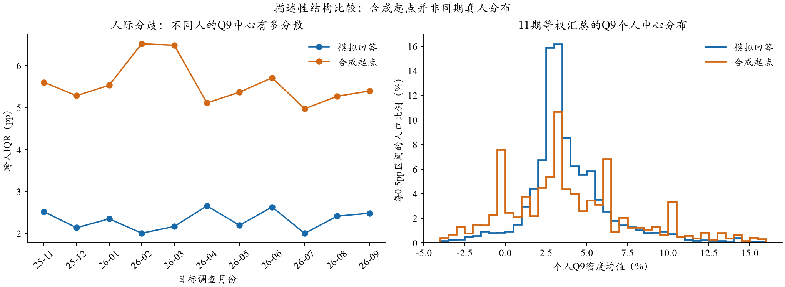
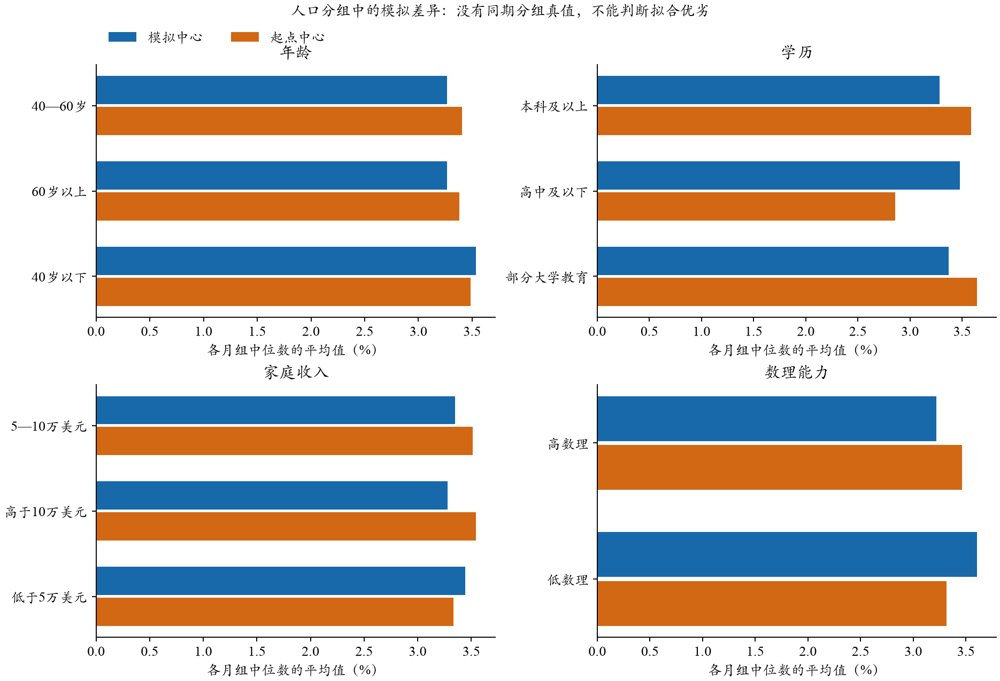

SCE近期11个月模拟效果
01 全国预测误差
模型MAE0.241pp
持续性基线MAE0.173pp
模型胜出月份5/11
完整答卷5,632/5,632
模型RMSE 0.296pp，基线 0.211pp；模型平均有符号误差 -0.114pp。MAE按11个月等权；pp是百分点。

来源：封存模拟回答与纽约联储逐月首发新闻稿；基线为预测截止前最后公开的全国值。
查看11个月的具体数值
| 月份 | 官方值% | 模拟值% | 基线% | 模型误差pp | 基线误差pp |
|---|
| 2025-11 | 3.2 | 3.197 | 3.2 | 0.003 | 0.000 |
| 2025-12 | 3.4 | 3.099 | 3.2 | 0.301 | 0.200 |
| 2026-01 | 3.1 | 3.217 | 3.4 | 0.117 | 0.300 |
| 2026-02 | 3.0 | 3.098 | 3.1 | 0.098 | 0.100 |
| 2026-03 | 3.4 | 3.214 | 3.0 | 0.186 | 0.400 |
| 2026-04 | 3.6 | 4.080 | 3.4 | 0.480 | 0.200 |
| 2026-05 | 3.5 | 3.420 | 3.6 | 0.080 | 0.100 |
| 2026-06 | 3.7 | 3.573 | 3.5 | 0.127 | 0.200 |
| 2026-07 | 3.6 | 3.259 | 3.7 | 0.341 | 0.100 |
| 2026-08 | 3.6 | 3.262 | 3.6 | 0.338 | 0.000 |
| 2026-09 | 3.9 | 3.323 | 3.6 | 0.577 | 0.300 |
早期48个月冻结的组合权重λ=0.0，所以本期冻结组合等于基线，MAE为0.173pp。不根据这11个月重新拟权。
02 模型输出的人群差异
平均每月跨人IQR：模拟 2.32pp，合成起点 5.57pp。IQR衡量不同人Q9中心的分散程度，和一个人自身的不确定性不同。

直方图每0.5pp一档，各月先按设计权重归一，再给月份相同质量；仅展示−4%至16%。起点不是同期真人真值，宽度变化不能直接称为误差。

每个月各组先计算加权中位数，再对合格月份等权平均；只纳入n≥20、ESS≥10的组月。详细分组与支持见summary.json。
03 模拟完成，评价错误已离线恢复
主批5,632次，原始技术失败20份；自动补跑20次，最终Q8缺失0、Q9缺失0，共5,652次实际API尝试。补跑是技术修复，不是重复实验。
生成耗时约27.8分钟。API已报 $4.0745；未知费用预留 $0.0689是未获完整回包请求的保守账目，不是已确认额外扣费；本批上限$8。
原评价进程因目录漏登2026-09而报KeyError，并非模拟中断。现单独归档官方2026-10-07发布的9月值3.9%，只补评价索引，原提示、回答、运行收据及冻结源码均保留。此次恢复没有新增模型调用。
04 如何理解这些结果
全国指标：对每个人的十档Q9拟合连续密度，取个人密度均值，再取人群加权中位数。Q8点预期独立保留，不参与此指标计算。
近期没有真人微观答案，因此不能给出同期个人MAE、W1或真人IQR误差。分组差异只是模型行为，不能证明真实人群关系已被还原。一次生成也不能拆分稳定个体差异和模型随机性。
本批是回顾性的时点回测。人口可得月采用“调查月末加九个日历月”规则假设，源波次2025-01逐步推进至2025-10；历史文件字节版本、新闻原始版本和模型知识截止未完全认证，不能称严格事前预测。
11个月样本很短。探索性的3月区块配对MAE差95%区间为[-0.045, +0.190]pp；它不涵盖所有输入构造或模型选择不确定性。
9月官方首发来源 · 完整机器可读结果 · 逐月CSV